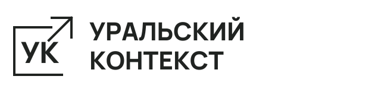
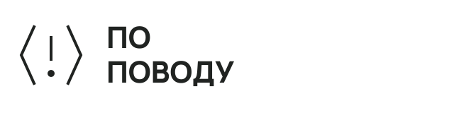
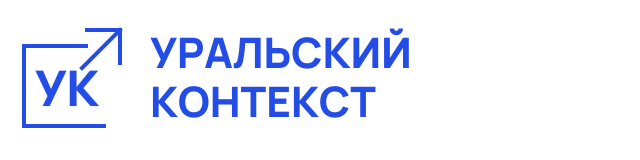

Есть другая сторона
Два облака речи, согласие и несогласие. Электрический синий, сильный заголовок, место для двух позиций

Один характер. Три формата. Визуальный язык «Уральского контекста» — для тех, кто спорит, объясняет и смотрит шире
Развитие согласованного сайта. Предлагаемые правила и знаки для всей линейки проектов
Общие шрифты и сетка объединяют семейство. Цвет, знак и характер заголовка помогают узнавать направление

Два облака речи, согласие и несогласие. Электрический синий, сильный заголовок, место для двух позиций

Раскрытые скобки и восклицательный знак. Лайм, ясная структура и вопрос, который хочется задать
Экран, антенна, кнопка воспроизведения. Каменный фон, крупное название и немного иронии
Выбери проект, чтобы посмотреть его знак и правила использования

Открытая рамка и стрелка наружу: пространство для мысли и новых связей
Синий на бумаге. Для тёмного фона используй светлую версию, для одноцветной печати — монохром
Свободное поле — не меньше ¼ высоты знака. Минимум для знака: 32 px; для полного логотипа: 220 px. Не растягивать, не наклонять, не добавлять тени
Скачать знак SVG ↓Нажми на цвет, чтобы скопировать HEX. Основные сочетания уже заданы в примерах
База: 60% бумага, 25% графит, 15% синий. Лаймовый — цвет лекций и дополнительный акцент. Камень — фон киновечеров. Терракота — редкий акцент, до 5%. Для текста: графит на светлом, светлый на синем
Короткие заголовки, сезоны и большие цифры. Крупный размер и плотный ритм; без длинных абзацев прописными
Текст, интерфейс, подписи и имена команд. Основной текст на сайте — 16–18 px; межстрочный интервал 1.5–1.7. Читаемость важнее плотности
Три учебных макета афиш. Это визуальные шаблоны, не анонсы реальных мероприятий
На афише главным остаётся тема. Логотип, дата, место и регистрация поддерживают её. Горные плоскости и координаты — второстепенные элементы
Используй фотографии конкретной встречи. Показывай спикеров, слушателей, вопросы и детали. Турнирная схема не заменяет фотоотчёт
Пишем уверенно и понятно. Спорим с аргументом, уважаем человека. Даём источники и оставляем место для другой позиции
PDF-брендбук на 17 страницах. В архиве — логотипы, афиши SVG и PNG, шрифты с лицензиями, CSS/JSON-токены и этот обзор для локального просмотра